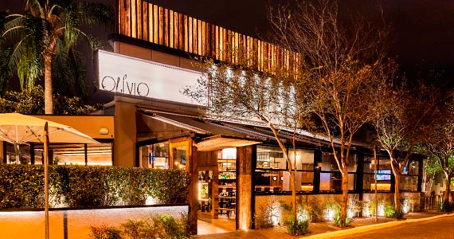
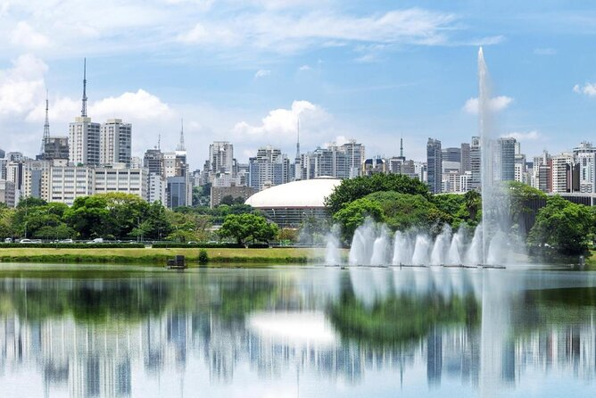

O lago Paranoá é uma lagoa artificial que abraça a cidade de norte a sul. Costuma ser bastante frequentado por praticantes de esportes náuticos que agitam suas águas. A Ponte JK, um dos cartões-postais de Brasília, atravessa o lago Paranoá e encanta os turistas a qualquer hora do dia. Nas margens do lago, o destaque fica por conta do Pontão do Lago Sul, com seus diversos bares e restaurantes.
Lago Paranoá é um lago artificial localizado em Brasília, capital do Brasil. Foi idealizado em 1894 pela Missão Cruls e concretizado com a construção da cidade, durante o governo do presidente Juscelino Kubitschek. O lago é formado pelas águas represadas do Rio Paranoá.
 O Museu Nacional de Brasília chama a atenção pela arquitetura semi-esférica idealizada por Oscar Niemeyer. Uns dizem que é semelhante a um disco voador, outros preferem compará-lo com metade de uma bola. O museu fica no setor cultural sul da cidade e o espaço conta com exposições de arte itinerantes, conferindo sempre um tom de novidade no ambiente. É um dos pontos turísticos de Brasília mais interessantes no quesito cultural.
 A noite em Brasília é agitada, principalmente aos fins de semana, ou seja, sempre tem alguma atividade para fazer, com a família ou os amigos. Uma delas é marcar uma hora para experimentar drinks especiais, um chope gelado ou até mesmo vinho. Confira os 18 melhores bares em Brasília para você inserir no seu roteiro, com opções para todo tipo de público e orçamento..
Veja no mapacomo chegar ao parque.